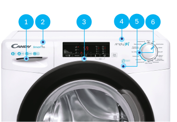

Линейка Smart Pro
Преимущества

Линейка Main Smart Pro создана на основе предыдущей линейки Smart, а
значит к ней перешли все базовые преимущества, а именно:
- Два дизайна люка: в черном и белом цвете.
- Наличие KG-детектора во всех моделях.
- Лучшее соотношение глубины корпуса и объема загрузки (до 6 кг в 34 см и до 8кг в 44 см).
Линейка Smart Pro
-
Современные значки-указатели
параметров стиральной машины в «плоском» дизайне:- загрузка (в кг.);
- класс энергопотребления;
- скорость отжима (об/мин);
- логотип AMS (рассмотрено далее).
-
Обновленный фирменный знак линейки
на кювете загрузки моющего средства. -
Обновленный дизайн и функционал дисплея
-
Логотип наименования приложения
с помощью которого стиральной машиной можно управлять удаленно. Данный логотип указывает, какое из двух приложений управления («simply-Fi» или «hOn») необходимо выбрать покупателю. -
Логотип технологии обработки белья паром
— «Easy Iron» для всех моделей с поддержкой данной функции. -
Обновленный дизайн вариатора программ
с выделенными (синим) быстрыми циклами стирки.
Дисплей
Дисплей новых моделей претерпел значительные изменения:
- Сенсорные кнопки стали частью общей сенсорной панели управления.
- Изменилась графика значков и кнопок, став более свежей и современной.
- Появился значок Wi-Fi, сигнализирующий об использовании удаленного управления.
Встроенная сенсорная кнопка «Функции» отвечает за включение:
- дополнительного полоскания;
- предварительной стирки;
- обработки белья паром.
Новый вариатор программ
Новый вариатор программ
Такое разделение позволяет привлечь внимание покупателя к наличию большого
выбора из 9 быстрых циклов, кроме того, визуально упрощает использование стиральной машины.
Всего на вариаторе 16 положений, одно из которых отвечет за включение дистанционного управления
через Wi-Fi.
Основы эффективной стирки
Почему Smart Pro позволяет выполнить стирку с превосходным результатом,
но тратит на это меньше времени, чем обычная стиральная машина?
В общем курсе по стиральным машинам Main были рассмотрены составляющие
процесса стирки:
- вода;
- химия (стиральный порошок);
- температура;
- механическое воздействие (трение ткани в процессе стирки).
Какую составляющую процесса стирки можно изменить, чтобы сохранить
высокий результат отстирывания но при этом сократить время стирки?
Правильно, — механическое воздействие.
Если правильно расчитать цикл вращения
двигателя, который влияет на силу отстирывания, можно получить такой же хороший
результат за меньшее время.
AMS-двигатель

Стандартный двигатель
Обычный цикл стирки проходит по следующему
алгоритму:
- Ускорение.
- Вращение на опрелеленной скорости (стирка).
- Замедление (остановка).
- Ускорение.

AMS-двигатель
После разгона и выхода на стандартную скорость
вращения, двигатель делает импульсные ускорения, что позволяет увеличить
интенсивность механической стирки и улучшить результат отстирывания.
Времени на стирку требуется меньше, результат
стирки — такой же, как на стандартном долгом цикле стирки.
Преимущества AMS
ACTIVE MOTION SYSTEM (AMS)
— импульсная система ускорения вращения от Main.
Эта система применена во всех моделях обновленной линейки Smart
Pro.
Эта система использует стандартный
двигатель, который использовался и ранее
в стиральных машинах Main Smart и заслужил доверие своей длительной качественной работой.
Так как данный двигатель можно было использовать более эффективно, это было
сделано в моделях
обновленной линейки Smart Pro, где новая система цифрового управления повысила КПД
использования.
Смарт-функционал
Вся линейка Smart Pro оснащена обновленной системой беспроводного
управления и работает с помощью приложения simply-Fi.
Приложение доступно для iOS и для Android.
Регистрация в приложении
simply-Fi — это система управления всеми
продуктами Main, позволяющая с помощью смартфона организовать цифровой хаб управления бытовой
техникой.
Что может приложение:
- Собрать все зарегистрированные приборы покупаетля в единый список.
- Собирать статистику по всем приборам в рамках возможностей каждого из них.
- Использовать голосового помощника для разных приборов (если эта возможность настроена в приборе).
Для подключения к приложению потребуется дата покупки прибора
и данные серийного номера.
Для доступа к серийному номеру и всей необходимой информации о стиральной машине необходимо:
- Открыть загрузочный люк.
- Наклейка находися слева вверху на углублении люка, чуть выше петли крепления.
- QR-код содержит всю необходимую информацию, его можно использовать при регистрации прибора в приложении.
Возможности приложения
Что может стиральная машина Main Smart Pro вместе с приложением simply-Fi:
Функционал стиральных машин Main Smart Pro при использовании
приложения simply-Fi значительно расширяется.